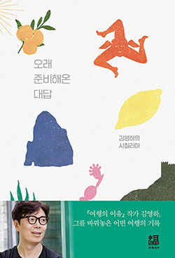

p18
선생에게는 지식 외에도 많은 것이 요구된다. 친화력, 학생에 대한 애정, 그리고 자신이 알고 있는것을 잘 제시할 수 있는 표현력이 있어야 한다. 무엇보다 선생에게는 자신이 가르치는 것에 대한 확신이 필요하다. 이것은 매우 중요하며 따라서 너희들은 이것을 제대로 배우지 않으면 안 된다는 신념이 없다면 수업은 맥이 빠진다.
소설가는 봉제공장 노동자가 아니야. 계속 일한다고 생산량이 늘지는 않아.
일상은 어지럽고 난감하고 구질구질한 반면 소설속의 세계는 언어라는 질료로 견고하면서도 흥미롭게 축소되어 있다. 무엇보다 내 소설은 나를 환영하고 있다. 나를 초대하고 언제나 내가 그들의 세계 속으로 들어와 자신들에게 활력을 불어넣어 주기를 기대하고 있는 것이다.
나는 한순간의 만족을 위해 사들인, '너무 오래 존재하는 것들'과 결별해야겠다고 결심했다. 사서 축적하는 삶이 아니라 모든 게 왔다가 그대로 가도록 하는 삶, 시냇물이 그러하듯 잠시 머물다 다시 제 길을 찾아 흘러가는 삶. 음악이, 영화가, 소설이, 내게로 와서 잠시 머물다 다시 떠나가는 삶. 어차피 모든 것을 기억하고 간직할 수는 없는 일이 아니냐.
p21
장편소설을 쓴다는 것은 고통스럽지만 실로 진귀한 경험이다. 단편소설과는 완전히 다르다. 하나의 세계와 다양한 인물들을 창조하고 그 안에서 그들과 함께 살아가는 경험이다.
p22
그러나 예술의 세계는 질투라는 에너지로 이루어진 성운이다.
p23
학교에서는 평생을 함께할, 평가와 비난이 아니라 격려와 사랑을 함께 나눌 예술적 동지를 구하라.
p24
고대 그리스의 수사학 학교에서는 좋은 연설에 다음 세 가지가 필수적이라고 가르쳤다. 사람들을 감동시키든가 웃기든가, 아니면 유용한 정보를 줘라.
p27
우리나라 방속국의 제작현실은 열약하다. 제작기간은 짧고 일정은 즉흥적이며 제작비도 적다. NHK나 BBC가 육 개월 걸려 찍을 일도 우리나라 방송사들은 이 주 안에 찍는다고 한다.
p182
"그냥, 그냥 사는 거지. 맛있는 것 먹고 하루종일 얘기하다가 또 맛있는 거 먹고." "그러다 자고." "맞아. 아무것도 계획하지 않고 그냥 닥치는 대로 살아가는 거야."